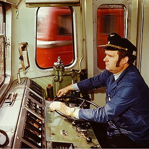
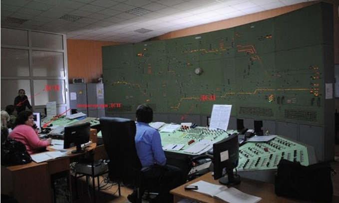
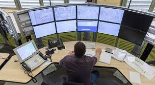
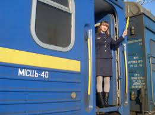
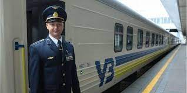
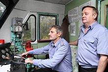

Залізничник — людина, чиєю сферою професійної діяльності є залізничний транспорт!
Машиніст локомотива (ТЧМ) — цілком серйозна та відповідальна людина, спеціаліст на залізничному транспорті який володіє обширними знаннями, особливо по фізиці. Здійснює керування локомотивом (паровоз, тепловоз, електровоз) або моторвагонним рухомим складом (дизель-поїзд, електропоїзд). В деяких випадках для забезпечення безпеки руху, машиністу доводиться суперечити законам фізики для найраціональнішого керування потягом щоб не допустити серйозних та невідворотних наслідків.
Детальніше
Колійний обхідник - це працівник залізничного транспорту, який обходить залізничні колії з метою їх огляду на певній ділянці або станції, має посаду бригадира колії.
Детальніше
Черговий по станції (ДСП) — змінний працівник (начальник зміни, диспетчер або інший працівник, на якого покладено обов'язки чергового по станції відповідно до штатного розпису), який одноосібно розпоряджається прийманням, відправленням і пропусканням поїздів, маневровою роботою, а також іншими переміщеннями рухомого складу на головних та приймально-відправних коліях станції (а де немає маневрового диспетчера — і на інших коліях)
Детальніше
Поїзний диспе́тчер (ДНЦ) — змінний працівник, який одноособово керує рухом поїздів на підпорядкованій йому залізничній ділянці.
Детальніше
Провідник — залізничний службовець, що супроводжує пасажирський вагон у дорозі та обслуговує пасажирів.
Детальніше
Начальник потягу керує роботою колективу кондукторів залізничного потягу, при необхідності дає розпорядження іншим працівникам потягу: локомотивним бригадам, працівникам вагону-ресторану та поштового вагону
Детальніше
Диспетчером залізничної станції є спеціаліст, який здійснює одноосібне керівництво рухом поїздів на довіреній йому ділянці.
ДетальнішеПомічник машиніста локомотива (розмовне: Помогала, Помогало, Пряник, Помоха, Штурман, Студент)[1] — працівник залізничного транспорту, що входить до складу локомотивної бригади. Відноситься до категорії технічних виконавців і в своїй трудовій діяльності підпорядковується безпосередньо машиністу локомотива.
Детальніше